Yufu
Yufu · Oita
Yufu
Highlighted on the Oita map.

Sights
Yufu Gaku

Yufu Tsurisutoinfomeshon Center YUFUiNFO (Yufuinfo)

Yufu In Rentasaikuru

Kanko Tsuji Basha

Yado Sai Gyoun So
Seiryu Tohotaru no Yado Takao So
Ryokan Izumoya
Ryokan Maruya
Ryokan Yamashiro Ya
Tsukahara Onsen Kako no Izumi
Gin Baths
Yu no Hira Ueyanagi Ya
Iyashi no Yado Taka Kachi
Sanso Matsuya
Yado Ro Ban Ya
Oku Yu no Hira Hana Akari
Otoko Ike (Oike)
Sagiri Dai
Mikoto Pia Ho no Bo no Onsen Kan
Yu Taira Onsen no Ishidatami
Yambe Ryori Yu no Gaku Iori
Hashi Ya Ichi Zen Main Shop
Yufu In Arutejio
Nobiru Sanso
Yufu In Onsen Yufuin Sansui Kan
Dai Kine Sha (Ogosha)
Kyujitsu no Iin
Otomaru Onsen Kan
Yufu In Eki
CAFE LA RUCHE
COMICO ART MUSEUM YUFUIN
Kuchi no Hara (Kuchi no Haru) Fureai Plaza
Kikubatake Park
Nosambutsu Chokubai Tokoro Yo Damari Shokudo
Kiri Shima Shrine
Kurodake
Shirogahara (Jogahara) Oto Campground
Roadside Station
U Na Shi Hime Shrine (Unagihimejinja)
Shitan Yu
Yu no Tsubo Onsen
Yu no Tsubo Kaido
Garan Gaku Kako
Yufu Kawa Gorge
Hebi Etsu Tembo Tokoro
Kinrin Mizumi
Hotoke Yamadera (Bussanji)
Yufu In Eki Atohoru
Yufu Kogen Gorufu Club
Nikoruzu Ba
Kenko Onsen Kan Kuaju Yufuin
Tsukahara Highlands (Tsukaharakogen)
Yamanami Haiuei
Shonai Kagura
Yu Hiradana Ta
Yufu Yu no Hira Forest Park
Yufu Yakusho
Dining
レストラン 南の風
Resutoran Minami No Kaze
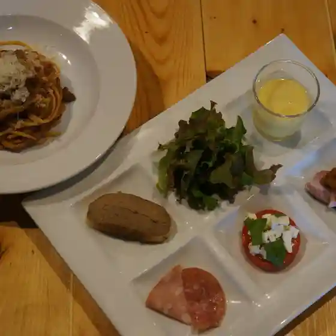
七輪炭火焼 啓修庵
Shichirin Sumibi Yaki Keishuu Iori
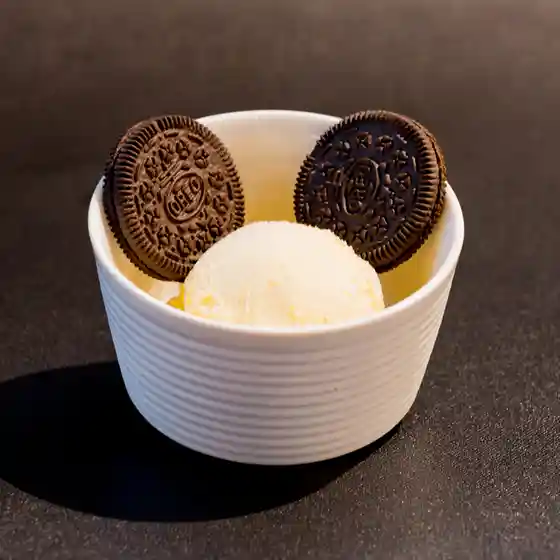
白頭山
Shirogashira Yama
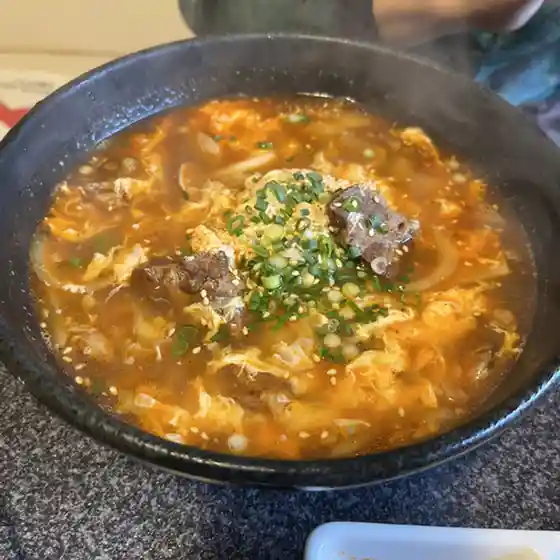
清流とほたるの宿 高尾荘
Seiryuu Tohotaruno Yado Takao Sou
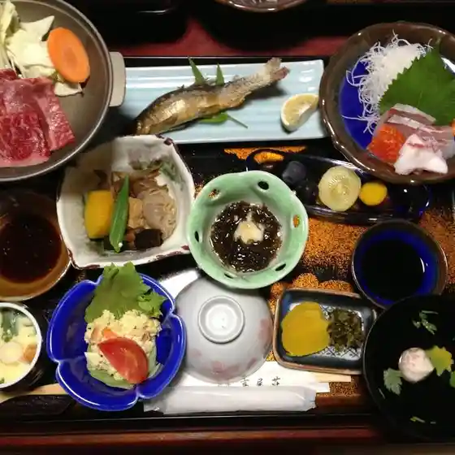
寿司ゆふいん
Sushi Yufuin
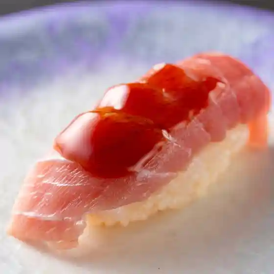
由布院 しいたけキッチン
Yufuin Shiitake Kitchin
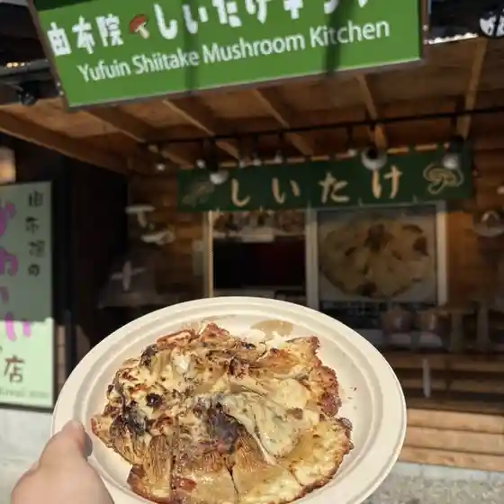
食楽処 和
Shoku Raku Tokoro Wa
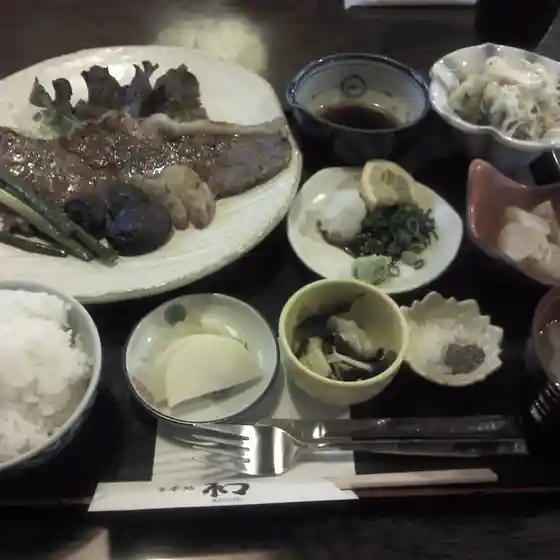
たべものや１２の月
Tabemonoya 1 2 No Gatsu
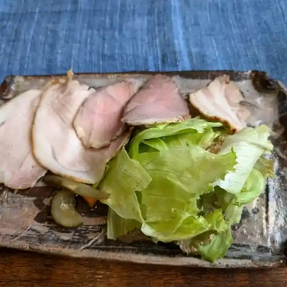
かふぇ ほおのき
Kafe Hoonoki
清美堂 駅前通り店
Kiyomi Dou Ekimaedoori Mise
由布の彩 ヤドヤ おおはし
Yuu No Sai Yadoya Oohashi
レジーナリゾート由布院
Rejiinarizooto Yufuin
夢二CAFE
Yumeji Cafe
由布の癒 友里
Yuu No Yu Yuuri
風の丘
Kaze No Oka
茄子屋
Nasu Ya
日本茶 5toku
Nihoncha 5Toku
味処きたの
Ajidokoro Kitano
開花亭
Kaika Tei
てっぱん焼 由布庵
Teppan Yaki Yuu Iori
宗教法人跣足カルメル会修道院
Shuukyouhoujin Sensoku Karumeru Kai Shuudouin
冨季の舎
Tomi Ki No Sha
Cafe＆Bar リンデン
Cafe & Bar Rinden
珈琲工房 木馬
Koohii Koubou Mokuba
うっしっし
Usshisshi
ごま福堂 湯布院店
Goma Fuku Dou Yufuin Mise
癒しの里 観布亭
Iyashi No Sato Kan Nuno Tei
レモネード&スイーツ リモ
Remoneedo &Amp; Suiitsu Rimo
由布院炭焼 邦櫻
Yufuin Sumiyaki Kuni Sakura
cafe.e‐denn
Cafe . E ‐ Denn
ダイニング 風花
Dainingu Kazabana
御食事処 岳庵
Mike Koto Tokoro Gaku Iori
nicoドーナツ 湯布院本店
Nico Doonatsu Yufuin Honten
ゆふいん 文学の森
Yufuin Bungaku No Mori
おいちゃんうどん
Oichan'Udon
塚原温泉 火口乃泉
Tsukahara Onsen Kakou No Izumi
和モダンな温泉旅館 湯布院らんぷの宿
Wa Modan Na Onsenryokan Yufuin Ranpuno Yado
売店豊の辻
Baiten Yutaka No Tsuji
鰻の成瀬 湯布院金鱗湖店
Unagi No Naruse Yufuin Kinrin Mizuumi Mise
由布院 六花
Yufuin Rikka
湯布院 神楽
Yufuin Kagura
陣屋市場 ふれあい茶屋
Jinya Shijou Fureai Chaya
森の喫茶店 四季
Mori No Kissaten Shiki
勢吉茶屋
Sei Kichi Chaya
湯布院ほてい屋
Yufuin Hotei Ya
ジョイフル 大分湯布院店
Joifuru Ooita Yufuin Mise
うな北 由布院店
Una Kita Yufuin Mise
食彩や 五衛門 別館
Shokusai Ya Go Emon Bekkan
湯布院 串焼き CARNE
Yufuin Kushiyaki Carne
soeurs
Soeurs
ろばた源
Robata Gen
菊すけ
Kiku Suke
里の駅 川西農産物加工直売所
Sato No Eki Kawanishi Nousanbutsu Kakou Chokubai Tokoro
摘み草せんべい ぽこあぽこ
Tsumi Kusa Senbei Pokoapoko
中島九条珈琲 湯布院駅前店
Nakajima Kyuujou Koohii Yufuin Ekimae Mise
湯富里の宿 一壷天
Yu Tomisato No Yado Ichi Tsubo Ten
やまとや旅館
Yamatoya Ryokan
牛かつ一禅
Ushi Katsu Ichi Zen
由布院Milch 本店
Yufuin Milch Honten
蓮輪
Hasu Wa
Yufumabushi Shin Yufuin Ekimae Yufu Oita Prefecture Kyushu
Yufumabushi Shin Yufuin Ekimae Yufu Oita Prefecture Kyushu
Yufumabushi Shin Yufuin Ekimae Yufu Oita Prefecture Kyushu
Yufumabushi Shin Yufuin Ekimae Yufu Oita Prefecture Kyushu
Yufumabushi Shin Yufuin Ekimae Yufu Oita Prefecture Kyushu
Yufumabushi Shin Yufuin Ekimae Yufu Oita Prefecture Kyushu
Yufumabushi Shin Yufuin Ekimae Yufu Oita Prefecture Kyushu
Yufumabushi Shin Yufuin Ekimae Yufu Oita Prefecture Kyushu
Yunotake an Yufu Oita Prefecture Kyushu
Yunotake an Yufu Oita Prefecture Kyushu
Yunotake an Yufu Oita Prefecture Kyushu
Yunotake an Yufu Oita Prefecture Kyushu
Yunotake an Yufu Oita Prefecture Kyushu
Yunotake an Yufu Oita Prefecture Kyushu
Yunotake an Yufu Oita Prefecture Kyushu
Yunotake an Yufu Oita Prefecture Kyushu
Sabou Tenjosajiki Yufu Oita Prefecture Kyushu
Sabou Tenjosajiki Yufu Oita Prefecture Kyushu
Sabou Tenjosajiki Yufu Oita Prefecture Kyushu
Sabou Tenjosajiki Yufu Oita Prefecture Kyushu
Sabou Tenjosajiki Yufu Oita Prefecture Kyushu
Sabou Tenjosajiki Yufu Oita Prefecture Kyushu
Sabou Tenjosajiki Yufu Oita Prefecture Kyushu
Sabou Tenjosajiki Yufu Oita Prefecture Kyushu
Yufu Mabushi Shin Kinrinko Honten Yufu Oita Prefecture Kyushu
Yufu Mabushi Shin Kinrinko Honten Yufu Oita Prefecture Kyushu
Yufu Mabushi Shin Kinrinko Honten Yufu Oita Prefecture Kyushu
Yufu Mabushi Shin Kinrinko Honten Yufu Oita Prefecture Kyushu
Yufu Mabushi Shin Kinrinko Honten Yufu Oita Prefecture Kyushu
Yufu Mabushi Shin Kinrinko Honten Yufu Oita Prefecture Kyushu
Yufu Mabushi Shin Kinrinko Honten Yufu Oita Prefecture Kyushu
Yufu Mabushi Shin Kinrinko Honten Yufu Oita Prefecture Kyushu
B speak Yufu Oita Prefecture Kyushu
B speak Yufu Oita Prefecture Kyushu
B speak Yufu Oita Prefecture Kyushu
B speak Yufu Oita Prefecture Kyushu
B speak Yufu Oita Prefecture Kyushu
B speak Yufu Oita Prefecture Kyushu
B speak Yufu Oita Prefecture Kyushu
B speak Yufu Oita Prefecture Kyushu
Wasaku Yufu Oita Prefecture Kyushu
Wasaku Yufu Oita Prefecture Kyushu
Wasaku Yufu Oita Prefecture Kyushu
Wasaku Yufu Oita Prefecture Kyushu
Wasaku Yufu Oita Prefecture Kyushu
Wasaku Yufu Oita Prefecture Kyushu
Wasaku Yufu Oita Prefecture Kyushu
Wasaku Yufu Oita Prefecture Kyushu
Hidamari Shokudo Yufu Oita Prefecture Kyushu
Hidamari Shokudo Yufu Oita Prefecture Kyushu
Hidamari Shokudo Yufu Oita Prefecture Kyushu
Hidamari Shokudo Yufu Oita Prefecture Kyushu
Hidamari Shokudo Yufu Oita Prefecture Kyushu
Hidamari Shokudo Yufu Oita Prefecture Kyushu
Hidamari Shokudo Yufu Oita Prefecture Kyushu
Hidamari Shokudo Yufu Oita Prefecture Kyushu
Yunotake an Yufu Oita Prefecture Kyushu
Yunotake an Yufu Oita Prefecture Kyushu
Yunotake an Yufu Oita Prefecture Kyushu
Yunotake an Yufu Oita Prefecture Kyushu
Yufumabushi Shin Yufuin Ekimae Yufu Oita Prefecture Kyushu
Yufumabushi Shin Yufuin Ekimae Yufu Oita Prefecture Kyushu
Yufumabushi Shin Yufuin Ekimae Yufu Oita Prefecture Kyushu
Yufumabushi Shin Yufuin Ekimae Yufu Oita Prefecture Kyushu
Yufu Mabushi Shin Kinrinko Honten Yufu Oita Prefecture Kyushu
Yufu Mabushi Shin Kinrinko Honten Yufu Oita Prefecture Kyushu
Yufu Mabushi Shin Kinrinko Honten Yufu Oita Prefecture Kyushu
Yufu Mabushi Shin Kinrinko Honten Yufu Oita Prefecture Kyushu
Yufuin Kinsho Croquettes Yufu Oita Prefecture Kyushu
Yufuin Kinsho Croquettes Yufu Oita Prefecture Kyushu
Yufuin Kinsho Croquettes Yufu Oita Prefecture Kyushu
Yufuin Kinsho Croquettes Yufu Oita Prefecture Kyushu
Yufuin Milch Yufu Oita Prefecture Kyushu
Yufuin Milch Yufu Oita Prefecture Kyushu
Yufuin Milch Yufu Oita Prefecture Kyushu
Yufuin Milch Yufu Oita Prefecture Kyushu
Gen Ekimae Yufu Oita Prefecture Kyushu
Gen Ekimae Yufu Oita Prefecture Kyushu
Gen Ekimae Yufu Oita Prefecture Kyushu
Gen Ekimae Yufu Oita Prefecture Kyushu
Stay
Ｂ＆Ｂ由布 天領の里
B & B Yuu Tenryou No Sato
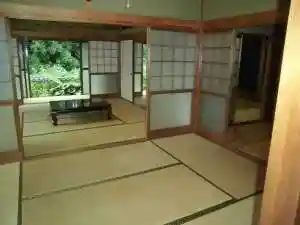
湯布院温泉郷 グランピング COMOREBI (コモレビ)
Yufuin Onsen Sato Guranpingu Comorebi ( Komorebi )
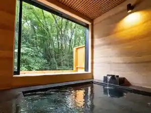
鉄道と山の見える家
Tetsudou To Yama No Mie Ru Ie
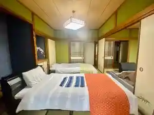
かいがけ温泉 きのこの里
Kaigake Onsen Kinokono Sato
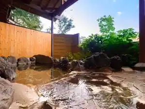
由布院温泉 旅館 冨季の舎
Yufuin Onsen Ryokan Tomi Ki No Sha
全室半露天付き客室 旅館由布山
Zenshitsu Han Roten Tsuki Kyakushitsu Ryokan Yuu Yama
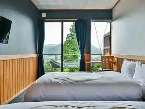
ＴｈｅＶｉｌｌａｇｅ由布院温泉グランピング
T H E V I L L A G E Yufuin Onsen Guranpingu
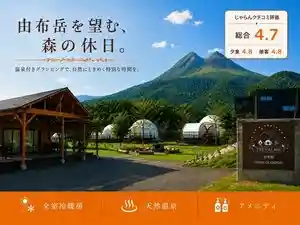
湯布院 星の里
Yufuin Hoshi No Sato
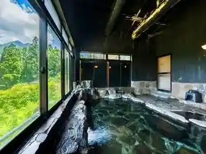
湯布院温泉 ひすいの宿 黎明(れいめい)
Yufuin Onsen Hisuino Yado Reimei ( Reimei )
由布院 梅園 ＧＡＲＤＥＮ ＲＥＳＯＲＴ
Yufuin Umezono G A R D E N R E S O R T
由布岳を身近に感じる -柚富の郷 彩岳館-
Yuu Gaku Wo Mijika Ni Kanji Ru - Yuzu Tono Sato Sai Gaku Kan -
湯布院山荘 吾亦紅
Yufuin Sansou Waremokou
由布岳一望の宿 美星
Yuu Gaku Ichibou No Yado Bisei
LENTO湯布院
Lento Yufuin
おやど 開花亭
Oyado Kaika Tei
全室露天付き離れ宿 御宿 さくら亭
Zenshitsu Roten Tsuki Hanare Yado Onjuku Sakura Tei
山紫水明の宿 わさく
Sanshi Suimei No Yado Wasaku
由布院温泉 旅館 めばえ荘
Yufuin Onsen Ryokan Mebae Sou
豊後水道絶品海鮮が自慢の料理宿 木蓮
Bungo Suidou Zeppin Kaisen Ga Jiman No Ryouri Yado Mokuren
由布院温泉 旅館 光の家
Yufuin Onsen Ryokan Hikari No Ie
アットホームな宿 由布の宿 きふう
Attohoomu Na Yado Yuu No Yado Kifuu
由布院ユウベルホテル
Yufuin Yuuberuhoteru
湯平温泉 旅館いづもや
Yu Heion Izumi Ryokan Izumoya
湯平温泉 宿彩暁雲荘 源泉掛け流し大人限定宿
Yu Heion Izumi Yado Sai Gyouun Sou Gensen Kake Nagashi Otona Gentei Yado
旅館 高尾荘
Ryokan Takao Sou
Star Breeze House
Star Breeze House
旅館 山城屋
Ryokan Yamashiro Ya
旅館 都屋
Ryokan Miyako Ya